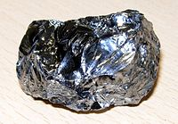

Numero atomico: 14
Massa atomica: 28,09
Temperatura di fusione (°C): 1414
Temperatura di ebolizione (°C): 3280
Energia di prima ionizzazione (kj/mol): 786
Elettronegatività (secondo Pauling): 1,90
Densità: 2,33
Numeri di ossidazione: +2±4
Configurazione elettronica: 1s2, 2s2, 2p6, 3s2, 3p2
Maggiori Informazioni